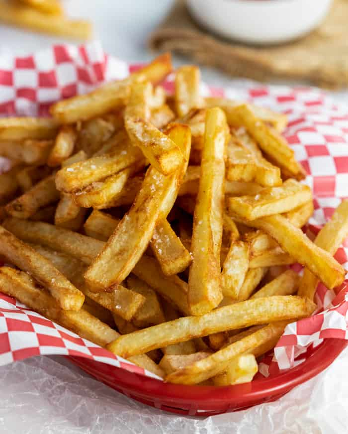

Home
Fries

Description
Learn the secret to making the best homemade French fries from russet potatoes right at home! These are easy to make ahead of time and fry or bake in the oven for a quick snack or side dish idea!
Ingredients
- 10 large russet potatoes, peeled and rinsed
- 2 quarts vegetable oil, can sub canola oil
- Salt
Steps
- Slice the potatoes into ½ inch thick sticks. Using a French fry cutter makes this much easier.
- Soak the potato slices in cold water for a minimum of one hour, and up to overnight. The longer, the better as this process removes the starch which makes for extra crispy fries.
- Rinse the fries twice with cold water.
- Lay the fries on paper towels or a clean dishcloth and pat them as dry as possible.
- Heat oil in a deep fryer or dutch oven to 300 degrees F. You’ll need to fry in about six batches, begin with a quart of oil and add more as needed. Frying too many at once makes them less crispy.
- Use a slotted spoon to add the potatoes to the oil and fry for about 5-6 minutes. The oil should bubble lightly, we’re only heating the potatoes, we don’t want them to crisp yet.
- Place the cooked potatoes on a paper towel lined plate and fry the rest of the remaining batches.
- Increase the heat to 400 degrees F and fry each batch a second time until they are crisp and golden-brown, about 5 minutes or so.
- Remove them and place them on dry paper towels. Sprinkle with salt as soon as they come out.
- Serve with ketchup or fry sauce and enjoy!